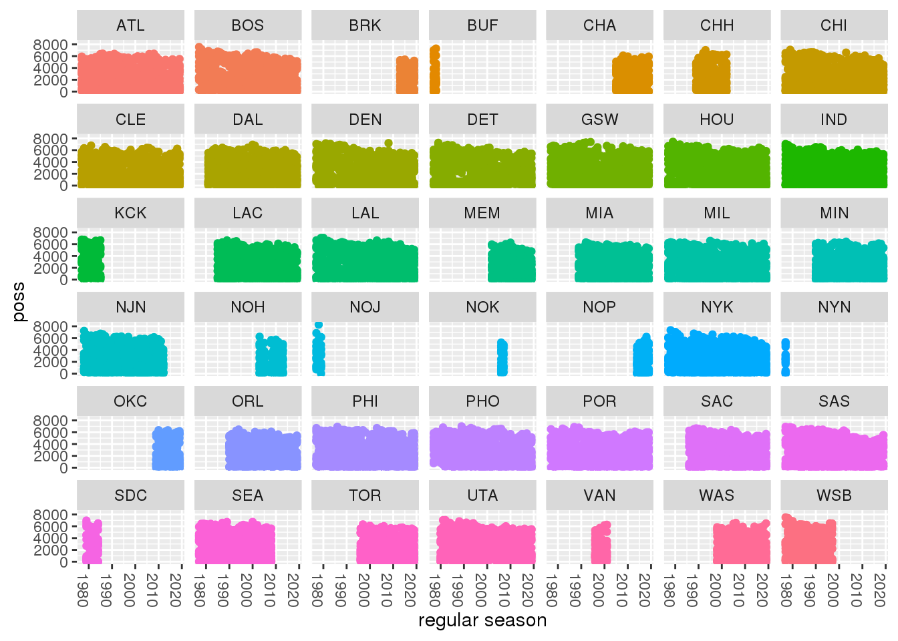
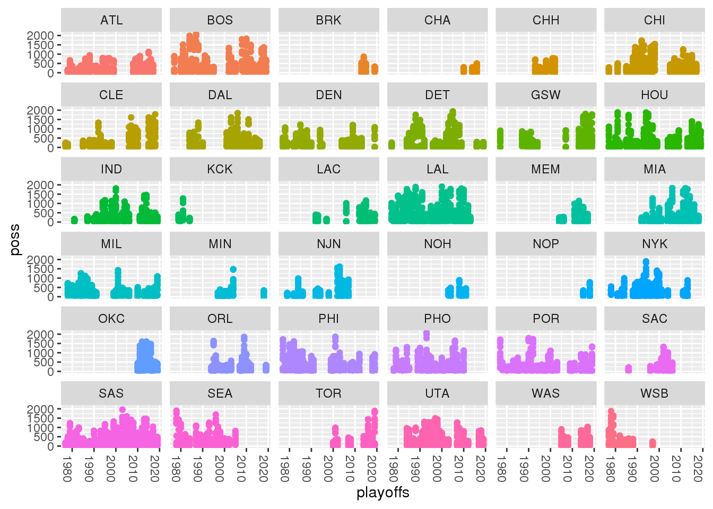
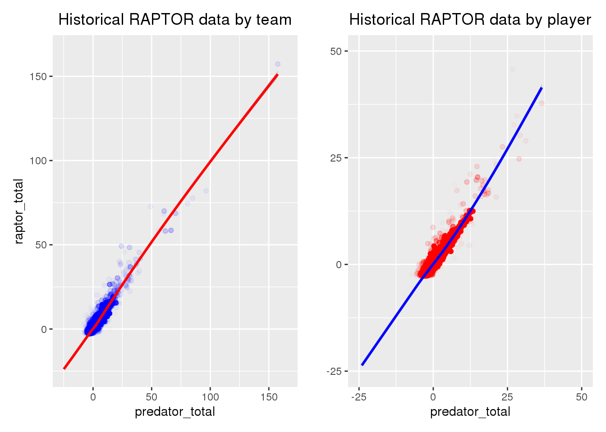
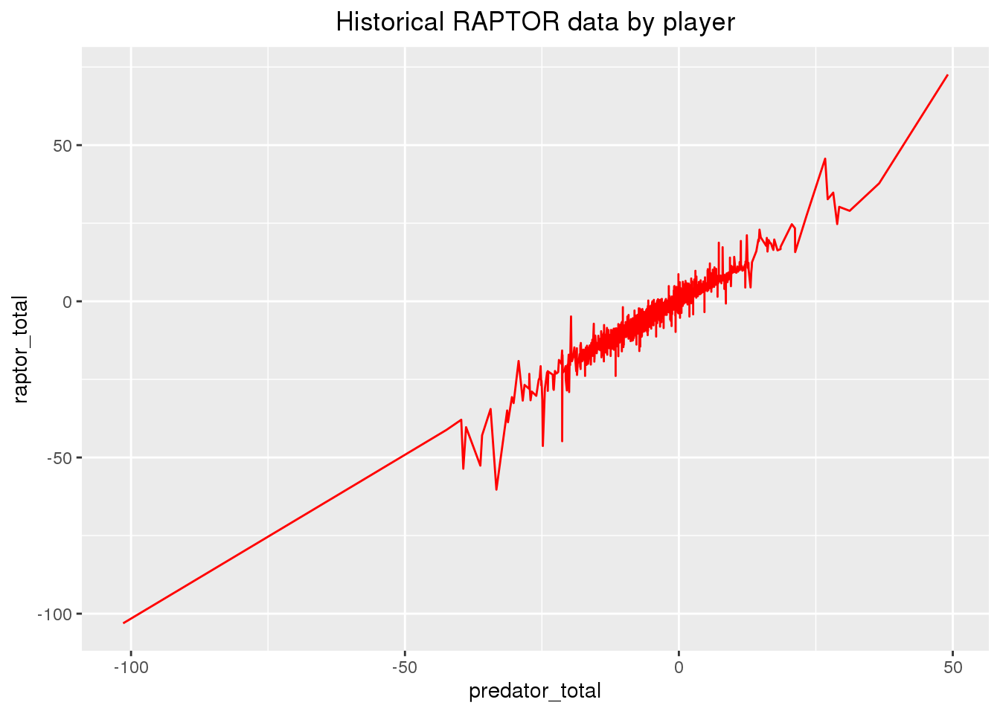

Data
library(tidyverse)
RAPTOR_byteam_latest <- read_csv("latest_RAPTOR_by_team.csv")
RAPTOR_byplayer_hist <- read_csv("historical_RAPTOR_by_player.csv")
RAPTOR_byteam_hist <- read_csv("historical_RAPTOR_by_team.csv")
In this project, I am examining individual players’ impact on their team’s success using the latest_RAPTOR_by_team.csv dataset(s) from the fivethirtyeight website. The data consists of 808 observations of 23 variables. The variable pace_impact represents a player’s impact on team possessions per 48 minutes, so if it is positive that means that that player is helping to increase the pace by which their team plays. This is relevant because by increasing their team’s pace they are helping add extra possessions. The variable raptor_total represents the points above average per 100 possessions added by player on both offense and defense. The war_total represents Wins Above Replacement between regular season and playoffs, so it is another variable that measures an individual player’s ability to influence the outcome. The mp variable represents minutes played, which can help give some context since the better players in the NBA will naturally be playing more minutes.
The other dataset I will be using is the historical_RAPTOR_by_team.csv dataset, which consists of 27371 observations of 17 variables, and the historical_RAPTOR_by_player.csv dataset. The historical_RAPTOR_by_team.csv dataset contains RAPTOR data for every player broken out by team, season and season_type since the 1976 ABA-NBA merger. The historical_RAPTOR_by_player.csv dataset contains RAPTOR data for every player broken out by season since the 1976 ABA-NBA merger. The variable season_type is a variable that represents the type of season and has two levels: regular season (RS) and playoff (PO).
Question 1
So how does the pace_impact of a player indicate their impact on the outcome of the game for their team? If so, what was the effect? First we need to graph the pace_impact variable to see if there is a correlation.
# graphed raptor_total vs. pace_impact, but correlated minutes played to size and war_total to color
ggplot(data = RAPTOR_byteam_latest, mapping = aes(pace_impact, raptor_total, color = war_total)) +
geom_point()
## Warning: Removed 2 rows containing missing values (geom_point).

ggplot(data = RAPTOR_byteam_latest, mapping = aes(pace_impact, raptor_total, color = war_total, size = mp)) +
geom_point()
## Warning: Removed 2 rows containing missing values (geom_point).
 On the first graph most of the data values, and WAR ratings do not seem to have a consistent trend. However there are some higher data values that didn’t have a clear explanation so I decided to correlate the dot size to minutes played on the second graph. I did this because RAPTOR data is supposed to be used to determine how effctive a player is, but does not necessarily always account for sample size. In the second graph we can see that all the outlier values are smaller dots which means they are for players who do not play as many minutes which hurts their level of effectiveness compared to the other players in the league.
On the first graph most of the data values, and WAR ratings do not seem to have a consistent trend. However there are some higher data values that didn’t have a clear explanation so I decided to correlate the dot size to minutes played on the second graph. I did this because RAPTOR data is supposed to be used to determine how effctive a player is, but does not necessarily always account for sample size. In the second graph we can see that all the outlier values are smaller dots which means they are for players who do not play as many minutes which hurts their level of effectiveness compared to the other players in the league.
The difference between the two graphs shows that the pace_impact does not have much of an impact on team success. Of all the bigger dots that represent players that get a substantial minutes, none of them reach above a raptor_total rating of 25. This suggests that even if a better player helps increase the pace of play, effectively earning extra possessions for their team, it won’t make a noticable difference.
Question 2
The next thing I want to test is whether the distribution of the data varies from the regular season to the post season.
reg_season <- RAPTOR_byteam_hist %>%
filter(season_type == "RS")
playoffs <- RAPTOR_byteam_hist %>%
filter(season_type == "PO")
Here I created two new datasets so it will be easier to view the data for the regular season and for the playoffs separately.
ggplot(data = reg_season, mapping = aes(season, poss, color = team)) +
geom_point() +
xlab("regular season") +
facet_wrap(~team) +
theme(legend.position = "None") +
theme(axis.text.x = element_text(angle = -90, hjust = 0))

ggplot(data = playoffs, mapping = aes(season, poss, color = team)) +
geom_point() +
xlab("playoffs") +
facet_wrap(~team) +
theme(legend.position = "None") +
theme(axis.text.x = element_text(angle = -90, hjust = 0))

In the two graphics above graphed the number of possessions vs. the type of season (regular season or playoffs). The number of possessions are more consistently high on the regular season graph than they are on the graph for the playoffs. One possible explanation for this would be that not everyone plays as long as the others in the playoffs because they might have gotten eliminated earlier. However, even the peaks on the playoff graphic appear to be not as high as the average during the regular season. Could this mean that the number of possessions, or in other words the number of opportunities to score, become lower in the playoffs?
Question 3
The last thing I would like to investigate is the predictive accuracy of NBA RAPTOR data.
ggplot(RAPTOR_byteam_hist, aes(predator_total, raptor_total)) +
geom_line(color="blue") +
ggtitle("Historical RAPTOR data by team") +
theme(plot.title = element_text(hjust = 0.5))

ggplot(RAPTOR_byplayer_hist, aes(predator_total, raptor_total)) +
geom_line(color="red") +
ggtitle("Historical RAPTOR data by player") +
theme(plot.title = element_text(hjust = 0.5))

For both graphs I tested the predictive ability of the RAPTOR data by graphing the raptor_total variable vs. the predator_total for the historical_RAPTOR_by_player.csv and the historical_RAPTOR_by_team.csv datasets. The data does spike in both directions, but its trend is fairly linear. This suggests that more times than not, RAPTOR data has been accurate in predicting value added for individual players.
Conclusion
More advanced stats like pace_impact do not seem to make an impact on a team’s success. However, as we saw in the graphs for possessions in the regular season vs. the post season, when teams get to more high-pressure situations like the playoffs having those extra possessions due to an increased pace could mean the difference between victory and defeat.
However, in the graphs for pace_impact I saw how important context could be after assigning the variable for minutes played (mp) to the size of the points in the dot plot. After making that change the result showed that all the values for players who played a significant amount of minutes did not have high RAPTOR scores, and the only ones who did were players who played a much lesser amount of minutes.